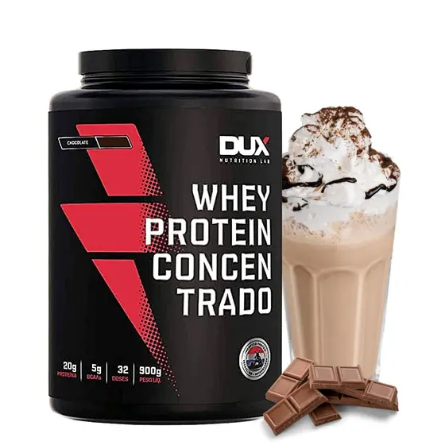

Whey Protein Concentrado

Para quem é indicado o Whey Protein Concentrado?
O Whey Protein Concentrado é um suplemento alimentar derivado do soro do leite, conhecido por ser uma fonte de proteína de alta qualidade e fácil digestão. Ele oferece todos os aminoácidos essenciais, incluindo os importantes BCAAs, que ajudam na formação de músculos e ossos. Por ser um suplemento mais completo, ele também contém carboidratos, gorduras, lactose e minerais, com uma concentração de proteínas em torno de 80%.
Se você não possui intolerância à lactose e não segue uma dieta com alta restrição calórica, o Whey Protein Concentrado pode ser a escolha perfeita para você. Ele oferece uma proteína de alta qualidade com um excelente custo-benefício, sendo uma opção prática e acessível para alcançar seus objetivos, garantindo que você invista no que realmente importa.
Todos os whey concentrados listados abaixo são produzidos exclusivamente com proteína de soro do leite, sem misturas com proteínas de outras origens. Essa prática de adicionar proteínas de menor qualidade é comum no mercado para aumentar a concentração proteica, mas pode comprometer a quantidade de aminoácidos essenciais. Aqui, garantimos que você encontre opções confiáveis e de alta qualidade, para que sua escolha seja segura e eficaz.
| Marca | DUX | MAX-Titaniun | Black Skull | Optimum Nutrition |
|---|---|---|---|---|
| Preço | 8 | 9 | 10 | 7 |
| Qualidade da proteína | 10 | 10 | 10 | 10 |
| Quantidade de proteína cada 30g | 20 | 21 | 21 | 24 |
| Sabor | 10 | 9 | 8 | 10 |
| Links confiáveis |
Whey Protein Concentrado DUX
 Ver produtoWhey Protein Concentrado da DUX, ah sim aqui temos um whey delicioso, sabe quando você está de dieta sem poder comer um docinho sequer? Pois é, esse whey vai te salvar! Nossa, não tem nada melhor que poder saborear uma bebida doce, geladinha sem pesar na consciência. Ou melhor fazer um receitinha como um mousse de whey protein Quem disse que dieta precisa ser sem graça?
Marca
Fundada em 2015, a DUX rapidamente conquistou espaço no mercado graças à qualidade excepcional de seus produtos. Como uma marca nacional, ela se destaca não apenas pela excelência, mas também pela variedade de sabores que agradam até os paladares mais exigentes.
Whey Protein Concentrado Max Titanium
Ver produtoA Max Titanium é amplamente reconhecida como uma das marcas nacionais mais confiáveis no mercado de suplementos, oferecendo produtos de altíssima qualidade. Entre seus destaques, o Whey Protein Concentrado se sobressai como uma das melhores opções disponíveis atualmente.
O que realmente diferencia o Whey Protein da Max Titanium é o seu sabor incomparável. Muitos consumidores elogiam sua experiência única, destacando-o como um dos wheys mais saborosos em comparação com outras marcas renomadas. Além disso, sua excelente dissolubilidade torna o preparo ainda mais prático e agradável, garantindo uma experiência completa e satisfatória para quem busca qualidade.
Whey Protein Concentrado Black Skull
Ver produtoA Black Skull é uma marca de suplementos que se destaca pela qualidade e inovação de seus produtos. O Whey Protein Concentrado da Black Skull é uma excelente opção para quem busca um suplemento de alta qualidade.
O Whey Protein Concentrado da Black Skull é conhecido por sua excelente solubilidade e sabor, tornando o consumo mais agradável. Com 21g de proteína por dose de 30g, ele oferece uma concentração ideal para quem busca resultados eficazes.
Além disso, a marca é reconhecida por sua transparência e compromisso com a qualidade, garantindo que você esteja investindo em um produto seguro e eficaz.
O Whey Protein Concentrado da Black Skull é conhecido por sua excelente solubilidade e sabor, tornando o consumo mais agradável. Com 21g de proteína por dose de 30g, ele oferece uma concentração ideal para quem busca resultados eficazes.
Além disso, a marca é reconhecida por sua transparência e compromisso com a qualidade, garantindo que você esteja investindo em um produto seguro e eficaz.
Whey Protein Concentrado Optimum Nutrition
Ver produtoA Optimum Nutrition, ou simplesmente ON para os íntimos, é uma marca que dispensa apresentações no mundo dos suplementos. Com sede em Aurora, Illinois, EUA, a ON é praticamente a Rainha dos suplementos: qualidade impecável, sempre inovando e com uma legião de fãs ao redor do mundo. Desde 1986, a Optimum Nutrition vem conquistando corações e músculos com produtos que atendem desde atletas de elite até quem está começando na academia.
O Whey Protein Concentrado da Optimum Nutrition é um verdadeiro clássico. Com a maior concentração de proteína possível em um whey concentrado, ele oferece 24g de proteína por dose de 30g, algo realmente raro, sendo perfeito para quem busca resultados eficazes. O sabor é outro ponto forte, com uma variedade de opções que agradam a todos os gostos.